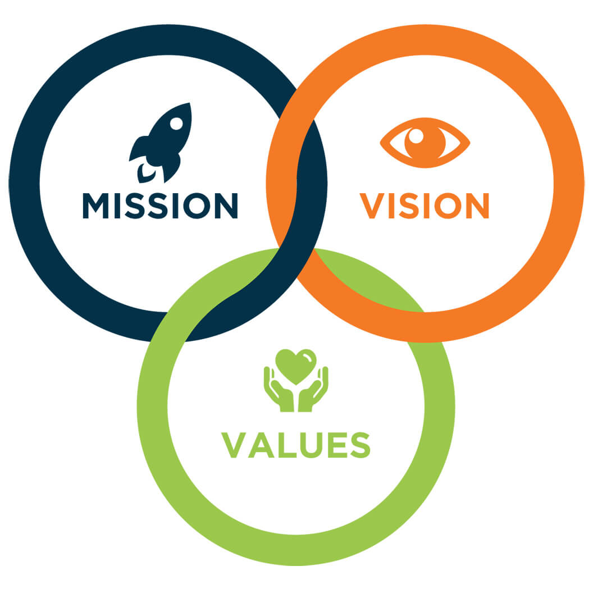

Vision
- To build a society that understands the aim of human life is to achieve wisdom.
- To build a society that understands living healthy is more important than living.
- To build a society, that understands finding peaceful solutions is always the right way to resolve problems of human race.
- To build a society that is conscious and responsible for the resources provided by nature and responsible for it.
- జ్ఞానం సంపాదించడమే మానవ జీవితం యొక్క ముఖ్య ఉద్దేశం అని అర్థం చేసుకునే సమాజాన్ని నిర్మించడం.
- జీవించడం కంటే ఆరోగ్యంగా జీవించడం చాలా ముఖ్యం అని అర్థం చేసుకునే సమాజాన్ని నిర్మించడం.
- శాంతియుత పరిష్కారాలను కనుగొనడం అర్థం చేసుకునే సమాజాన్ని నిర్మించడం ఎల్లప్పుడూ మానవ జాతి సమస్యలను పరిష్కరించడానికి సరైన మార్గం.
- ప్రకృతి ప్రసాదించిన వనరులను పట్ల హక్కుతో పాటు బాధ్యతగా మెలగాలి అనే స్పృహ కలిగిన సమాజాన్ని నిర్మించడం.